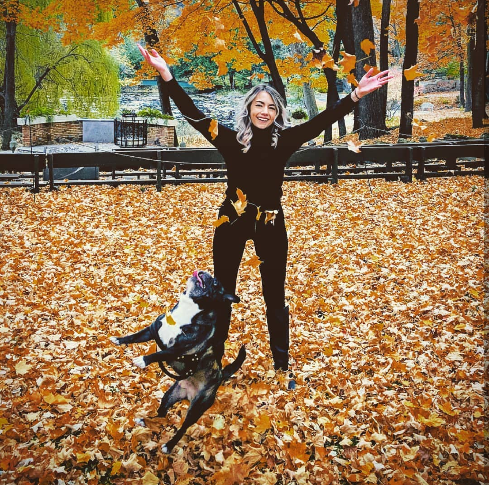

I have a dog named Gremlin! He is half french bulldog and half pug. He looks just like a little
gremlin. He is 4 years old and he is my best friend! He goes everywhere with me when he can.
Besides hanging out with Gremlin, in my free time I love knitting. I have made everything from hats
and scarves to blankets to more recently clothing.This fall I have made myself around 15 pieces of
clothing.
I was born in Santa Fe, NM. When I was 12 I moved to Minnesota. I hate the winters and the
humid late summer but I do enjoy the spring and fall weather.
I was a hair stylist for 5 years and finally decided it wasn't the right fit for my future that
I was looking for.
I am currently enrolled at a coding bootcamp at the U of M. So far I am very much enjoying the
class and am looking forward for whats to come in the future.